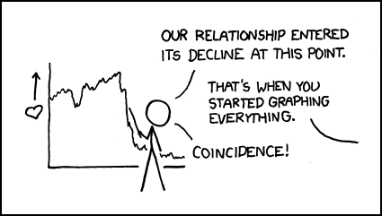
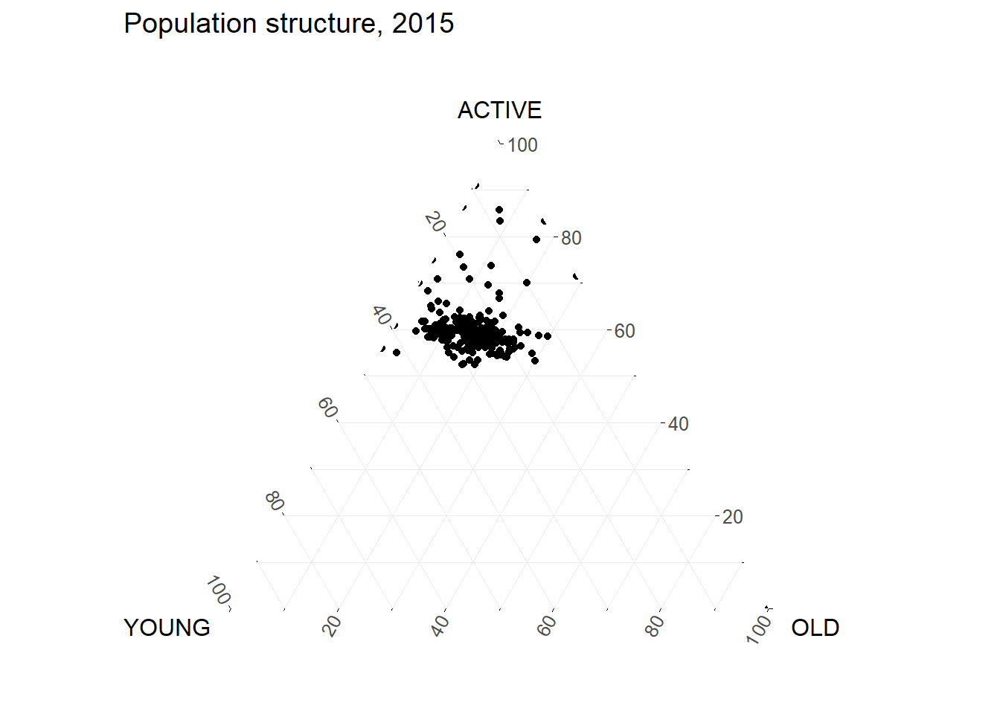

code block
pacman::p_load(plotly, ggtern, tidyverse) Lesson 5: Visual Multivariate Analysis

| Work done | Hands-on Exercise 5 |
| Hours taken | ⏱️⏱️⏱️⏱️⏱️⏱️ ( hospitalisation leave) |
| Questions | 0 |
| How do I feel? | 🥱 |
| What do I think? | Wow I came across funnel plots while doing my own research and there must be a distinction drawn between funnel charts (used to demonstrate the flow of users through a business or sales process) and funnel plots (are scatterplots that compares the precision (how close the estimated intervention effect size is to the true effect size) and results of individual studies. Of course, funnel plots are more exciting! |
Ternary plots are a way of displaying the distribution and variability of three-part compositional data. (For example, the proportion of aged, economy active and young population or sand, silt, and clay in soil.) It’s display is a triangle with sides scaled from 0 to 1. Each side represents one of the three components. A point is plotted so that a line drawn perpendicular from the point to each leg of the triangle intersect at the component values of the point.
In this hands-on, you will learn how to build ternary plot programmatically using R for visualising and analysing population structure of Singapore.
The hands-on exercise consists of four steps:
Install and launch tidyverse and ggtern packages.
Derive three new measures using mutate() function of dplyr package.
Build a static ternary plot using ggtern() function of ggtern package.
Build an interactive ternary plot using plot-ly() function of Plotly R package.
For this exercise, two main R packages will be used in this hands-on exercise, they are:
ggtern, a ggplot extension specially designed to plot ternary diagrams. The package will be used to plot static ternary plots.
Plotly R, an R package for creating interactive web-based graphs via plotly’s JavaScript graphing library, plotly.js . The plotly R libary contains the ggplotly function, which will convert ggplot2 figures into a Plotly object.
We will also need to ensure that selected tidyverse family packages namely: readr, dplyr and tidyr are also installed and loaded.
In this exercise, version 3.2.1 of ggplot2 will be installed instead of the latest version of ggplot2. This is because the current version of ggtern package is not compatible to the latest version of ggplot2.
pacman::p_load(plotly, ggtern, tidyverse) For the purpose of this hands-on exercise, the Singapore Residents by Planning Area Subzone, Age Group, Sex and Type of Dwelling, June 2000-2018 data will be used. The data set has been downloaded and included in the data sub-folder of the hands-on exercise folder. It is called respopagsex2000to2018_tidy.csv and is in csv file format.
To import respopagsex2000to2018_tidy.csv into R, read_csv() function of readr package will be used.
#Reading the data into R environment
pop_data <- read_csv("data/respopagsex2000to2018_tidy.csv") Next, use the mutate() function of dplyr package to derive three new measures, namely: young, active, and old.
#Deriving the young, economy active and old measures
agpop_mutated <- pop_data %>%
mutate(`Year` = as.character(Year))%>%
spread(AG, Population) %>%
mutate(YOUNG = rowSums(.[4:8]))%>%
mutate(ACTIVE = rowSums(.[9:16])) %>%
mutate(OLD = rowSums(.[17:21])) %>%
mutate(TOTAL = rowSums(.[22:24])) %>%
filter(Year == 2018)%>%
filter(TOTAL > 0)Use ggtern() function of ggtern package to create a simple ternary plot.
ggtern(data=agpop_mutated,aes(x=YOUNG,y=ACTIVE, z=OLD)) +
geom_point()
ggtern(data=agpop_mutated, aes(x=YOUNG,y=ACTIVE, z=OLD)) +
geom_point() +
labs(title="Population structure, 2015") +
theme_rgbw()
ggtern(data=agpop_mutated, aes(x=YOUNG,y=ACTIVE, z=OLD)) +
geom_point() +
labs(title="Population structure, 2015") +
theme_minimal()
The code below create an interactive ternary plot using plot_ly() function of Plotly R.
# reusable function for creating annotation object
label <- function(txt) {
list(
text = txt,
x = 0.1, y = 1,
ax = 0, ay = 0,
xref = "paper", yref = "paper",
align = "center",
font = list(family = "serif", size = 15, color = "white"),
bgcolor = "#b3b3b3", bordercolor = "black", borderwidth = 2
)
}
# reusable function for axis formatting
axis <- function(txt) {
list(
title = txt, tickformat = ".0%", tickfont = list(size = 10)
)
}
ternaryAxes <- list(
aaxis = axis("Young"),
baxis = axis("Active"),
caxis = axis("Old")
)
# Initiating a plotly visualization
plot_ly(
agpop_mutated,
a = ~YOUNG,
b = ~ACTIVE,
c = ~OLD,
color = I("black"),
type = "scatterternary"
) %>%
layout(
annotations = label("Ternary Markers"),
ternary = ternaryAxes
)Hands-on Exercise 5b: Visual Correlation Analysis
Hands-on Exercise 5c: Heatmap for Visualising and Analysing Multivariate Data
Hands-on Exercise 5d: Visual Multivariate Analysis with Parallel Coordinates Plot